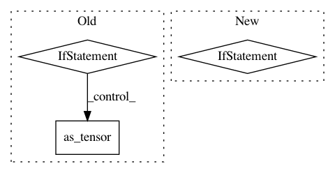

18b6c1229b68daeeaaef2266d82ca475f83a7445,torchdiffeq/_impl/rk_common.py,RKAdaptiveStepsizeODESolver,__init__,#RKAdaptiveStepsizeODESolver#Any#Any#Any#Any#Any#Any#Any#Any#Any#Any#Any#Any#,113
Before Change
self.max_num_steps = torch.as_tensor(max_num_steps, dtype=torch.int32, device=device)
grid_points = torch.tensor([], dtype=dtype, device=device) if grid_points is None else grid_points.to(dtype)
self.grid_points = grid_points
self.eps = eps if eps is None else torch.as_tensor(eps, dtype=dtype, device=device)
self.dtype = dtype
// Copy from class to instance to set device
self.tableau = _ButcherTableau(alpha=self.tableau.alpha.to(device=device, dtype=y0.dtype),
After Change
self.dtype = dtype
// Handle step_t and jump_t arguments.
if step_t is None:
step_t = torch.tensor([], dtype=dtype, device=device)
else:
_check_timelike("step_t", step_t, False)
step_t = step_t.to(dtype)
if jump_t is None:
jump_t = torch.tensor([], dtype=dtype, device=device)
else:
_check_timelike("jump_t", jump_t, False)
In pattern: SUPERPATTERN
Frequency: 3
Non-data size: 3
Instances
Project Name: rtqichen/torchdiffeq
Commit Name: 18b6c1229b68daeeaaef2266d82ca475f83a7445
Time: 2020-12-18
Author: rtqichen@gmail.com
File Name: torchdiffeq/_impl/rk_common.py
Class Name: RKAdaptiveStepsizeODESolver
Method Name: __init__
Project Name: pymc-devs/pymc3
Commit Name: 39cb01dfe48cf64a02de3cdb41bf0e2d647b20d9
Time: 2017-09-02
Author: maxim.v.kochurov@gmail.com
File Name: pymc3/variational/flows.py
Class Name: AbstractFlow
Method Name: add_param
Project Name: rtqichen/torchdiffeq
Commit Name: b914816142ae2776f531be1c0b49812a0bfde91f
Time: 2020-08-04
Author: 33688385+patrick-kidger@users.noreply.github.com
File Name: torchdiffeq/_impl/adams.py
Class Name: VariableCoefficientAdamsBashforth
Method Name: __init__